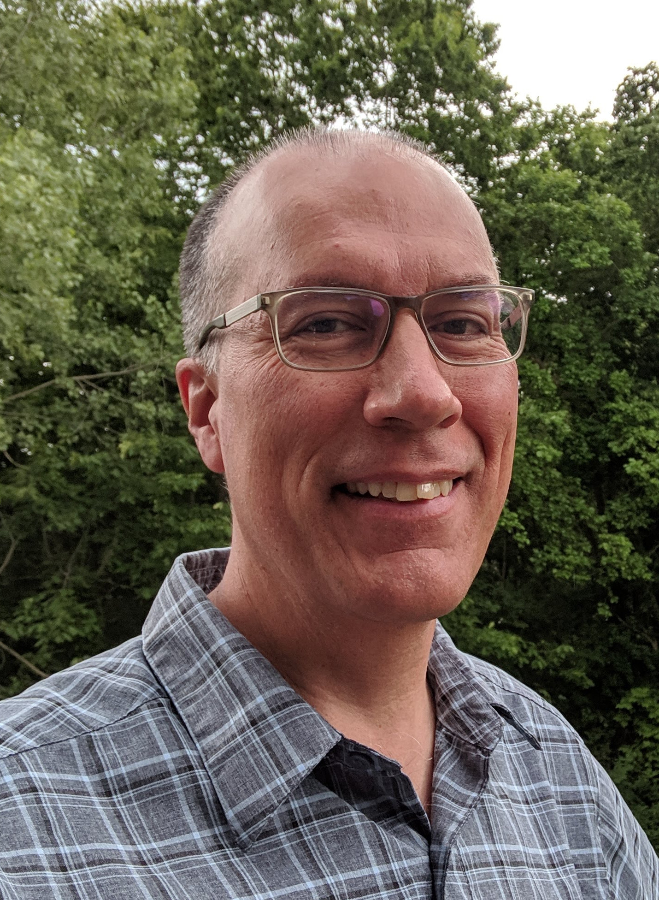

David AustinMathematics DepartmentGrand Valley State Universityaustind [at] gvsu [dot] eduCurriculum Vitae |
Open Educational ResourcesUnderstanding Linear Algebra, an open-access linear algebra textbook written in PreTeXt Active Calculus, the amazing open-access calculus text from Matt Boelkins
Open Textbook Initiative,
sponsored by the
American Institute of Mathematics.
|
Indigenous MathematicsI belong to the Choctaw Nation of Oklahoma. As an Indigenous mathematician, I am working to build connections and provide mathematical opportunities for Indigenous students that respect Indigenous culture. |
American Mathematical Society Feature ColumnThe American Mathematical Society's Feature Column is a monthly column written for a general audience and published by the AMS Public Awareness Office. I have written for the Feature Column from 2005 to the present. |
The City of Grand RapidsAs an outgrowth of the MAA's PIC Math program, the Grand Valley Math department partners with the City of Grand Rapids, Michigan making use of their open data portal GRData. Here are some student projects I have supervised:
|
Mathematical illustrationSome projects supporting mathematical illustration:
|